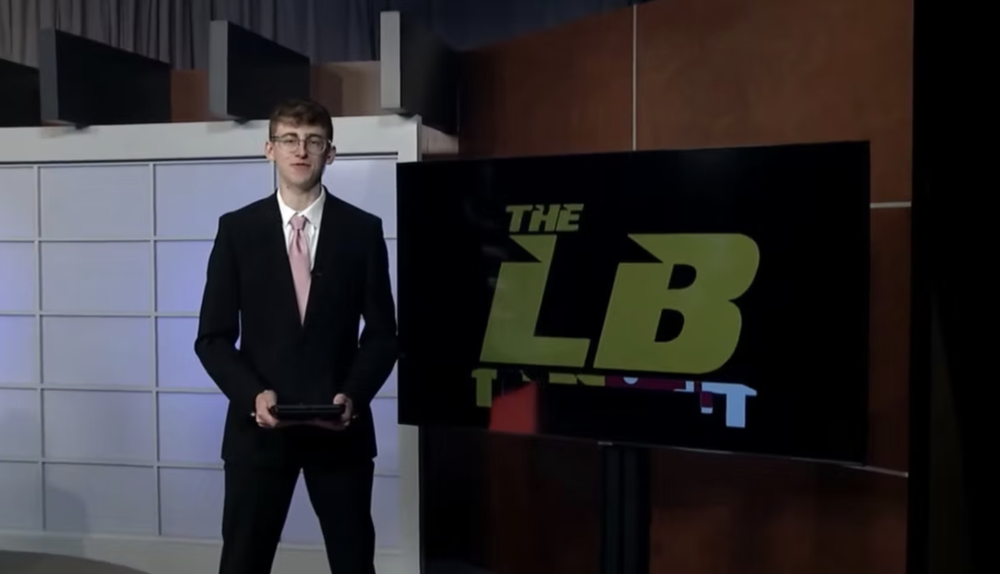
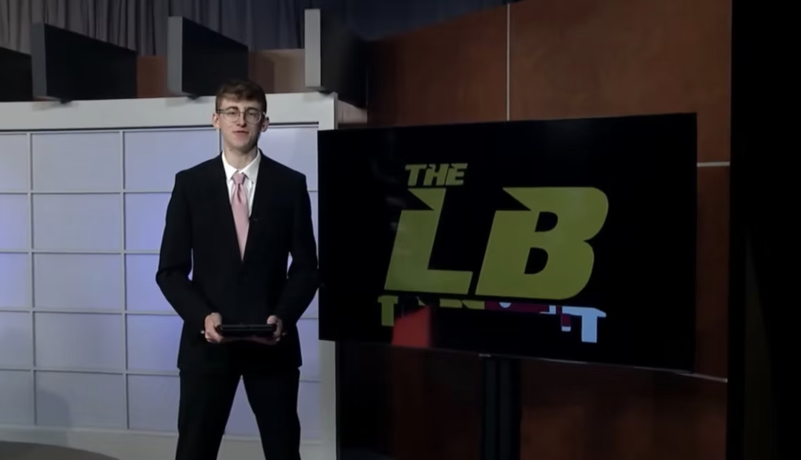

Full Resume (Last Updated April 2025)
JOURNALISM EXPERIENCE
Los Angeles Rams - Video Production Assistant (Los Angeles, California: July - August 2024)
- Worked as a paid crew member within Rams’ video production department throughout NFL Training Camp
- Produced “Inside Rams Camp” studio show, building and designing on-field set for daily post-practice use – operating Aputure 600x lights and multi-camera Canon EOS C300 & C70 setup during live show filming
- Assisted multimedia content production during daily practices, alongside video leads & producers on-field
Big Ten Plus Network - Broadcaster, Production Crew (College Park, Maryland: September 2023 - Present)
- Work as paid crew member to produce/announce live collegiate broadcasts for Big Ten athletic conference
- Production responsibilities include operating and controlling cameras, audio, replay, graphics, scorebug
WMUC Sports - News Director, Broadcaster College Park, Maryland: August 2023 - Present)
- Broadcaster calling Maryland athletics; live on Mixlr and edit/cut subsequent highlights on Adobe Audition
- Served as lead play-by-play announcer for Maryland at the 2024 NCAA Women’s Basketball Tournament
- Currently serve on Executive Board as publication's Editor-In-Chief, under News Director role – managing editing/posting of content to the website, assigning beat reporters for various University of Maryland sports
Terrapin Sports Central - Production/On-Air Talent (College Park, Maryland: August 2023 - Present)
- Production/on-camera roles for University of Maryland’s student-run, weekly broadcast sports studio show
- Work on deadline to craft and write package scripts, research and collect video clips, deliver on-camera segments with corresponding graphics; operate audio, teleprompter, camera, floor direct when off-camera
The Diamondback - Basketball Beat Writer (College Park, Maryland: August 2024 - Present)
- Published women’s basketball beat reporter for University of Maryland’s campus newspaper
- Write multiple live game recaps, midweek, preview and feature stories per week as credentialed media
Veniceball - Operations/Media Production Intern (Venice Beach, California: May - August 2024)
- As summer intern for the PUMA-partnered Venice Basketball League – generated/edited video content,wrote weekly published newsletters, served as a statistical game lead, carried out event production and merchandising, assisted in data entry and talent recruitment, interviewed VBL, NCAA & NBA athletes
Dodgers Nation - Intern (Pasadena, California: April - May 2023)
- Worked as a month-long intern through a personal Capstone project, covering the Los Angeles Dodgers
- Conducted a SWOT Analysis to provide accurate, researched feedback on the LA Sports Report subpage;created and formatted brand social media posts/graphics and planned, produced, edited a sports talk show
Atlantic Coast Conference (ACC) - Basketball Operations Assistant (Washington, D.C.: March 2024)
- Credentialed worker for ACC Basketball, on-site at the 2024 ACC Men’s Basketball Tournament
- Assisted in day-to-day game operations and behind-the-scenes work throughout the tournament – overseeing and organizing facilities, locker rooms, court setup in a fast paced, professional environment
Hoopbus - Content/Community Relations Intern (Los Angeles, California: May - August 2024)
- Assisted event support and outreach presence, involved with west coast community-sponsored events
- Featured in on and off camera roles, generated 250,000+ views across Instagram-specific channel posts
Play It Forward - Social Media/Marketing Manager (Los Angeles, California: May 2021 - March 2023)
- Served as online media manager for this non-profit organization to create, design and format posts
- Raised $500 for 5K event; planned/led a community sports drive, donated equipment to under-served youth
Skills
Adobe Premiere Pro, Adobe Photoshop, Adobe Audition, Adobe Lightroom, Adobe Bridge, Adobe After Effects, Adobe InDesign, Canva, Final Cut Pro, WordPress, Excel, Word, PowerPoint, RunDown Creator, Google Workspace, Hebrew, AP Style
Education
University of Maryland (College Park, MD) - Expected Graduation: May 2027
- Major: Journalism at the Philip Merrill College of Journalism (Bachelor’s degree)
- Professional Involvement: Associated Press Sports Editors, University of Maryland Student Chapter
- Awards: Philip Merrill College of Journalism Dean's Merit Award, 2023 | University of Maryland President's Scholarship, 2023 & 2024 | The Jonathan Ledecky Sports Journalism Scholarship, 2024 | K. Christopher Houston Scholarship, 2024